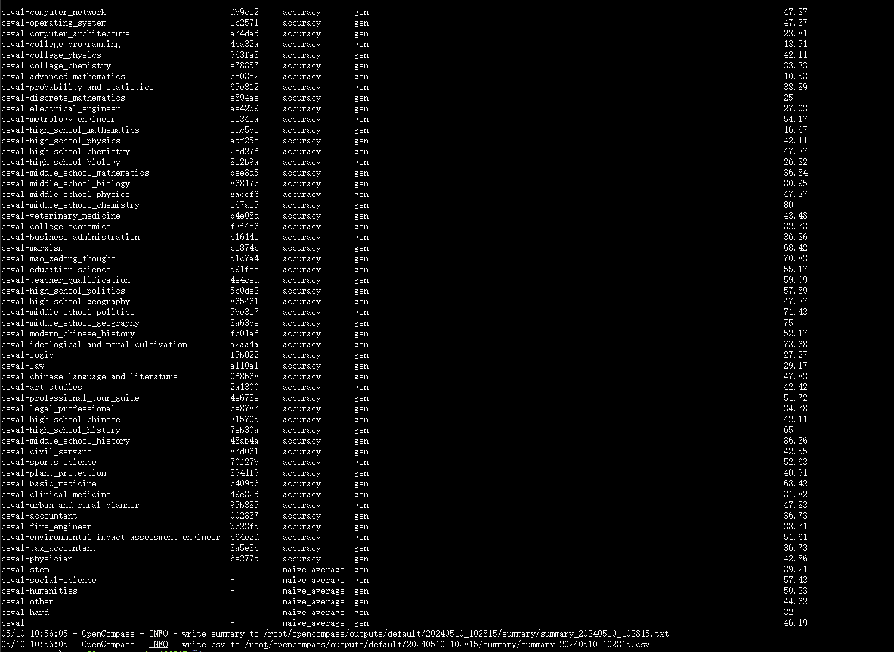

课时七 OpenCompass 大模型测评

1. 提交的作业结果
1.1 基础作业
1.1.1 使用 OpenCompass 评测 internlm2-chat-1_8b 模型在 C-Eval 数据集上的性能
- 结果截图 
-
复现步骤
1.2 进阶作业
1.2.1 将自定义数据集提交至OpenCompass官网
-
结果截图
-
复现步骤
2. 文档复现
在 OpenCompass 中评估一个模型通常包括以下几个阶段：配置 -> 推理 -> 评估 -> 可视化。
- 配置：这是整个工作流的起点。您需要配置整个评估过程，选择要评估的模型和数据集。此外，还可以选择评估策略、计算后端等，并定义显示结果的方式。
- 推理与评估：在这个阶段，OpenCompass 将会开始对模型和数据集进行并行推理和评估。推理阶段主要是让模型从数据集产生输出，而评估阶段则是衡量这些输出与标准答案的匹配程度。这两个过程会被拆分为多个同时运行的“任务”以提高效率，但请注意，如果计算资源有限，这种策略可能会使评测变得更慢。如果需要了解该问题及解决方案，可以参考 FAQ: 效率。
- 可视化：评估完成后，OpenCompass 将结果整理成易读的表格，并将其保存为 CSV 和 TXT 文件。你也可以激活飞书状态上报功能，此后可以在飞书客户端中及时获得评测状态报告。 接下来，我们将展示 OpenCompass 的基础用法，展示书生浦语在 C-Eval 基准任务上的评估。它们的配置文件可以在 configs/eval_demo.py 中找到。
2.1 环境配置
2.1.1 开发机创建
在创建开发机界面选择镜像为 Cuda11.7-conda，并选择 GPU 为10% A100。
2.1.2 conda环境、源码及依赖安装
studio-conda -o internlm-base -t opencompass
source activate opencompass
git clone -b 0.2.4 https://github.com/open-compass/opencompass
cd opencompass
pip install -e .
2.2 数据
- 拷贝解压开发机提供的数据
cp /share/temp/datasets/OpenCompassData-core-20231110.zip /root/opencompass/
unzip OpenCompassData-core-20231110.zip
- 查看支持的数据集和模型
出现模块未安装问题

执行requirements.txt安装

再次运行可查看到模型和数据对应的配置路径
2.3 启动测评
评测 InternLM2-Chat-1.8B 模型在 C-Eval 数据集上的性能。
python run.py --datasets ceval_gen --hf-path /share/new_models/Shanghai_AI_Laboratory/internlm2-chat-1_8b --tokenizer-path /share/new_models/Shanghai_AI_Laboratory/internlm2-chat-1_8b --tokenizer-kwargs padding_side='left' truncation='left' trust_remote_code=True --model-kwargs trust_remote_code=True device_map='auto' --max-seq-len 1024 --max-out-len 16 --batch-size 2 --num-gpus 1 --debug
-
命令解析
python run.py --datasets ceval_gen \ --hf-path /share/new_models/Shanghai_AI_Laboratory/internlm2-chat-1_8b \ # HuggingFace 模型路径 --tokenizer-path /share/new_models/Shanghai_AI_Laboratory/internlm2-chat-1_8b \ # HuggingFace tokenizer 路径（如果与模型路径相同，可以省略） --tokenizer-kwargs padding_side='left' truncation='left' trust_remote_code=True \ # 构建 tokenizer 的参数 --model-kwargs device_map='auto' trust_remote_code=True \ # 构建模型的参数 --max-seq-len 1024 \ # 模型可以接受的最大序列长度 --max-out-len 16 \ # 生成的最大 token 数 --batch-size 2 \ # 批量大小 --num-gpus 1 # 运行模型所需的 GPU 数量 --debug -
Debug出的错误
mkl-service + Intel(R) MKL MKL_THREADING_LAYER=INTEL is incompatible with libgomp.so.1 ...

新增环境变量
个人理解为多卡训练中环境设置的问题。（显卡资源虚拟化、容器编排调度）
2.4 测评结果
- 输出内容